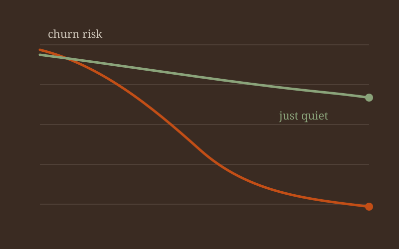
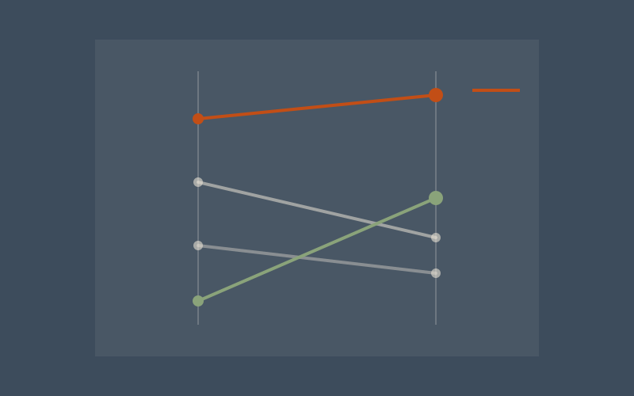

Teaching
Courses
Built ones first, then the ones I currently teach. Every course page ends with sample student work.
Courses I built
AI Methods for Social and Visual Data
Work with social and visual data without pretending the model is the decision.
Managing and Assessing Tech Talent and Organizations
How to hire, grow, and evaluate technical people without managing by vibes.
Courses I teach
Data Mining
Find structure in messy business data, then decide whether to trust it.
Data Visualization
Make a chart that changes what someone does on Monday.
Data Exploration and Visualization
Explore first, then visualize like you mean it.
Introduction to Probability and Statistics
The quantitative floor every later analytics course stands on.
Machine Learning for Business Applications
Machine learning that has to survive a business constraint, not just a Kaggle score.
Machine Learning Foundations with Python
The Python machine learning foundation Heinz students need for policy work.
Modern Data Management
Get the data into a shape a model — or a manager — can actually use.
Sample student projects
Studio work posted from the courses. Named teams and their artifacts go up once students opt in.

Grocery segments that change a promotion
Cluster a retail basket dataset, name the segments in language a category manager would use, and recommend one promotion change you would actually fund.

Who churns, and who is just quiet
A classification project that separates true churn risk from dormancy, with a cost-sensitive evaluation and a one-page decision brief for a product owner.

Redesigning a misleading public dashboard
Take a real dashboard that lies by accident, document the perceptual and statistical failures, and ship a redesign that a non-analyst can use under time pressure.

One chart, one decision
A board-packet exercise: a single visual that forces a yes/no decision, with the discarded alternatives shown in an appendix.

Reading the room on an earnings call
A multimodal project I designed into the new AI methods course: text, audio, and visual signals from an earnings call, with an explicit section on what the model must not be used for.

A city's civic graph
Build a network from public social data, find communities, and write the management memo before you write the model card.

Hiring scorecard for a twelve-person data team
From the micro-course I built: design a hiring and leveling scorecard that a non-technical manager can defend.
First week with a messy operations extract
Explore, clean, and visualize a hostile CSV until the interesting question is obvious. Then make the chart that survives the handoff.

How large is large enough?
A power and uncertainty brief for a product A/B test — the statistics course as a management deliverable.

A model with a constraint you cannot ignore
Machine learning for business applications: fit the model, then put a real operating constraint next to the ROC curve and decide anyway.
Inspection outcomes without leaking the future
Policy-facing machine learning: predict an inspection-related outcome with a leakage hunt as part of the grade.

Three CSVs to a table a model can trust
Modern data management sample: design keys, clean joins, and document the warehouse table so next week's mining team does not invent the schema again.